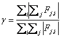
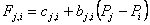

多个房间的稳态气流分析需要同时求解所有房间的方程（5）。由于方程（1）中的函数可能并且通常是非线性的，因此需要一种方法来求解联立非线性代数方程。牛顿-拉夫森 (N-R) 方法 [ 孔蒂和 德布尔 1972 p。 86]通过线性方程解的迭代来解决非线性问题。在 N-R 方法中，所有房间压力向量的新估计，{ P}* ，根据当前压力估计值计算，{ P }，由
| {P}* = {P} - {C} | (6) |
其中校正向量，{ C }，通过矩阵关系计算
| [J]{C} = {B} | (7) |
其中{ B } 是一个列向量，每个元素由下式给出
|
|
(8) |
和[ J ] 是方阵（即 N 个房间的网络中的 N × N）雅可比矩阵，其元素由下式给出

|
(9) |
在方程(8)和(9)中 Fj,i and ¶Fj,i/¶Pj 使用当前压力估计值进行评估{ P }。 ContamX 程序包含每个气流元件的子程序，这些子程序返回给定压差输入的质量流量和偏导数值。
方程(7)表示一组线性方程，每次迭代都必须建立并求解该方程组，直到获得该组房间压力的收敛解。其完整形式[ J ] 需要N个计算机内存2 值，标准高斯消除解的执行时间与 N 成正比 3 。稀疏矩阵方法可用于减少存储和执行时间要求。按照[中提出的方法进行天际线求解过程 达特 1984 ] 被选中。该方法可用于求解对称或非对称矩阵的方程。它在对角线上方的列中最高非零元素上方不存储任何零值，并且在对角线下方的每行中第一个非零值的左侧不存储零值。在这种情况下，雅可比矩阵是对称的。 CONTAM 提供了两种线性方程的求解方法：Skyline（也称为轮廓法）和预条件共轭梯度（PCG）。 PCG 对于许多房间和交叉点的问题可能很有用。
对元素模型的分析将表明

|
(10) |
尽管缩放可能有用，但此条件允许无需旋转的解决方案。请注意，分解后雅可比矩阵的稀疏程度取决于房间的排序。可以通过各种算法或经验法则来改进排序。在 AIRNET 中，定义气流网络很容易，但没有独特的解决方案。 ContamW 用户界面确保网络中气流元件的正确互连。
CONTAM 允许具有已知或未知压力的房间。恒压房间包含在方程组中，并且处理方程(7)以便不改变这些房间压力。这为定义气流网络提供了灵活性，同时保持了方程组的对称性。雅可比行列式是非奇异的充分条件 [ 阿克斯利 1987 ]是所有未知压力房间都通过压力相关流动路径连接到(a)恒定压力房间。在 CONTAM 中，环境（或室外）空气被视为恒压区。对于流量计算，假设环境房间压力为零，导致计算出的房间压力是相对于真实环境压力的值，并有助于在计算中保持数值显着性 DP.
每个房间的质量守恒为 N-R 迭代提供了收敛标准。也就是说，当对于当前系统压力估计的所有房间都满足等式(4)时，解已经收敛。通过测试每个房间的相对收敛性可以获得足够的精度：

|
(11) |
通过测试（S|Fj,i| < e 1、绝对收敛因子）防止被零除。的大小 e 可以通过考虑计算气流的使用来建立，例如在能量平衡中。无论如何，舍入误差可能会妨碍完美收敛（ e = 0).
N-R 方法解的数值测试表明偶尔会出现收敛非常慢的情况，因为迭代几乎在两组不同的值之间振荡。在 AIRNET 中，这是由 Steffensen 加速进程处理的。作者和 Wray 的最新测试 [ 雷 1993 ]表明使用更简单的常数欠松弛系数可以产生更快、更可靠的收敛加速过程。迭代过程的方程（6）变为
| {P}* = {P} - w{C} | (12) |
哪里 w 是松弛系数。已发现 0.75 的松弛系数可用于广泛的气流网络。该值不是真正的最佳值，但似乎可以很好地工作，而无需花费计算成本来查找理论上的最佳值。
当收敛进展迅速时，欠松弛（w < 1）与没有松弛相比，收敛速度减慢。为了防止这种情况，计算全局收敛值：
|
 |
(13) |
当 g* < ag, w 设置为 1。当前 CONTAM 使用 a = 30%。这通常会减少迭代次数。这就是简单的松弛不足。 CONTAM 也可以使用由 David M. Lorenzetti 基于 [ 丹尼斯和施纳贝尔 1996 ].
牛顿法需要一组房间压力的初始值。这些可以通过在每个气流元件模型中包含一个线性来获得 流量与压降的近似值：
|
 |
(14) |
每个房间的质量守恒导致一组以下形式的线性方程
| [A]{P} = {B} | (15) |
矩阵[ A 方程 (15) 中的 ] 具有与 [ 相同的稀疏模式 J ] 在方程（7）中允许对两个方程使用相同的稀疏矩阵求解过程。这种初始化可以很好地处理堆栈效应，并倾向于为流程建立正确的方向。 CONTAM 使用的单元模型的层流状态可以方便地提供线性近似。当解决一组类似的问题时，例如通过连续的稳态解来近似瞬态解时，最好使用房间压力的先前解作为新问题的初始值。